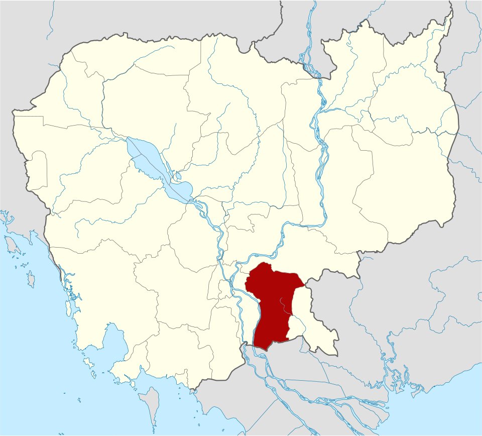
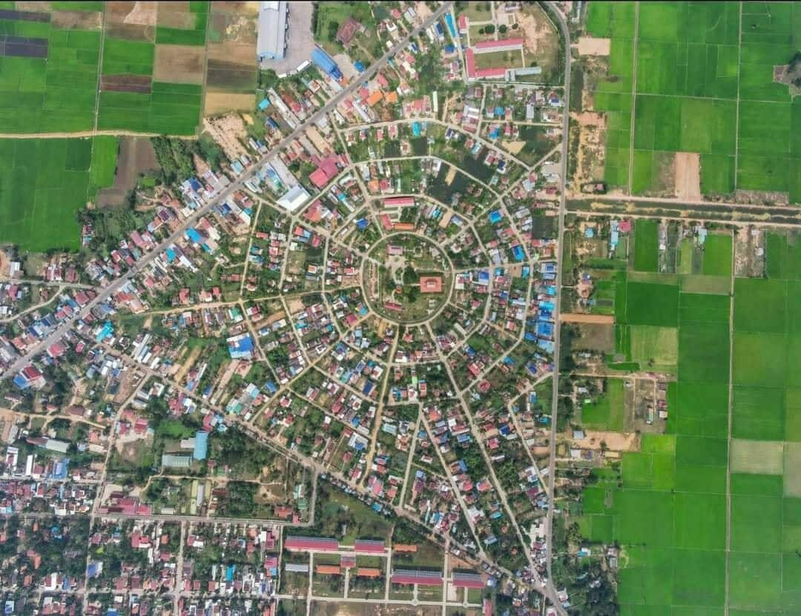
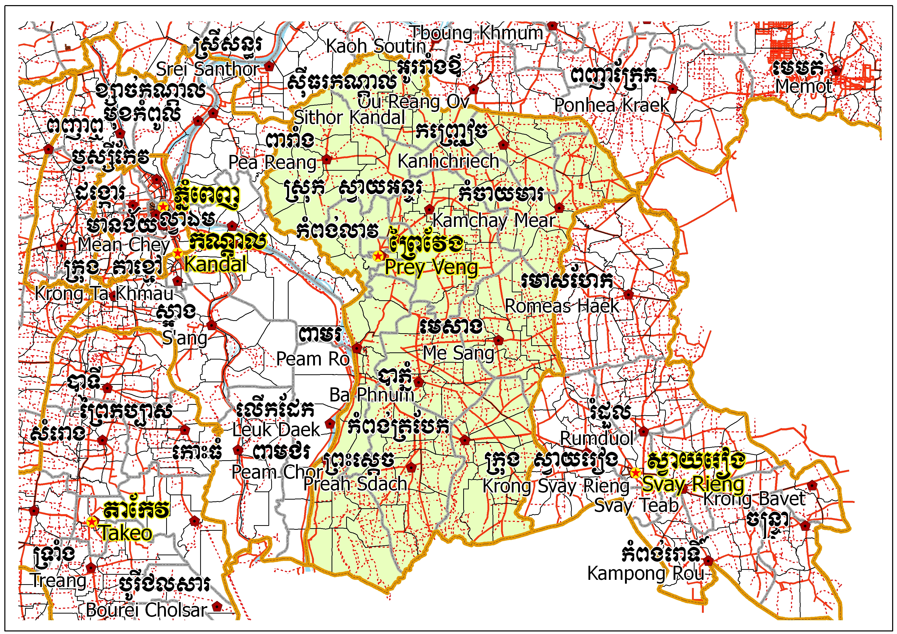
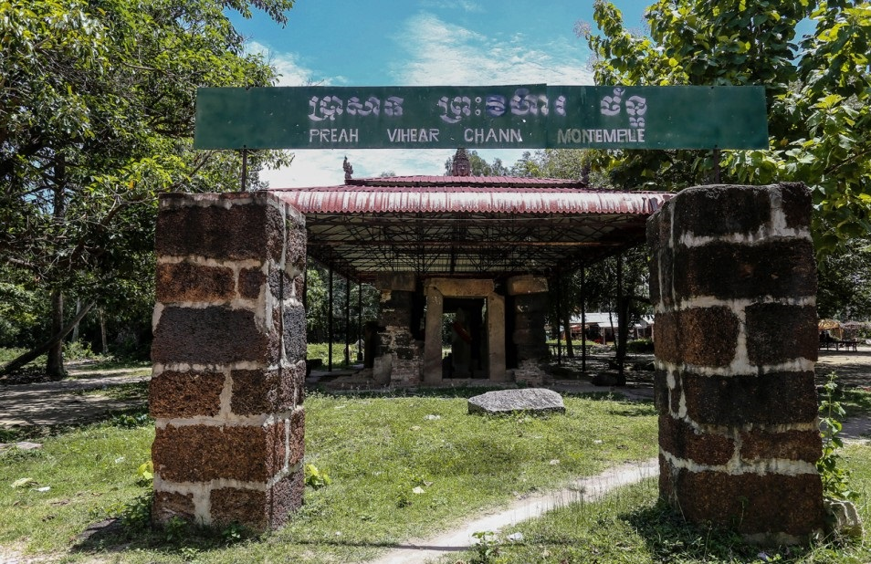
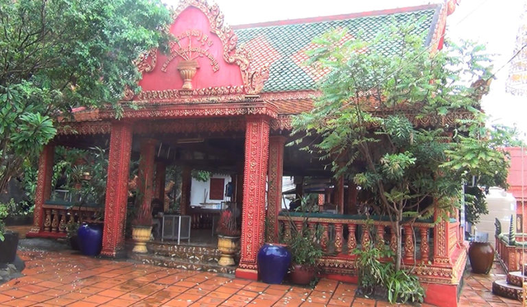

Prey Veng
← ត្រឡប់ទៅផែនទីខេត្តព្រៃវែង គឺជាខេត្តមួយនៃប្រទេសកម្ពុជា ខេត្តព្រៃវែងជាខេត្តមួយដែលស្ថិតនៅតំបន់ទំនាបកណ្ដាលជាខេត្តដែលផលិតស្រូវច្រើនជាងគេក្នុងប្រទេសកម្ពុជា ខេត្តព្រៃវែងជាខេត្តមួយដែលមានចំនួនប្រជាជន១.១ លាននាក់ច្រើនជាងគេទី៣នៅក្នុងប្រទេសកម្ពុជា ខេត្តព្រៃវែងជាប់នឹងដងទន្លេមេគង្គដែលអំណោយផលក្នុងវិស័យកសិកម្មផងដែរ។ខេត្តព្រៃវែង មានទីតាំងនៅភាគនិរតីនៃទន្លេមេគង្គដ៏មានសក្ដានុពល។ ហើយខេត្តព្រៃវែងមានទីរួមខេត្តមួយគឺ ក្រុងព្រៃវែង ។

ខេត្តព្រៃវែង ជាខេត្តដែលមានទីតាំងស្ថិតនៅភាគខាងកើតរាជធានីភ្នំពេញ មានព្រំប្រទល់ខាងកើតជាប់ខេត្តស្វាយរៀង និងវៀតណាម ខាងជើងជាប់ខេត្តកំពង់ចាម និងខេត្តត្បូងឃ្មុំ ខាងលិចជាប់ខេត្តកណ្តាល និងខាងត្បូងជាប់វៀតណាម។ ខេត្តព្រៃវែង មានច្រកអន្តរជាតិចំនួន ៣ កន្លែងគឺ ទី១ ច្រកអន្តរជាតិម៉ឺនជ័យ (ស្រុកកំចាយមារ) ទី២ ច្រកអន្តរជាតិបន្ទាយចក្រី (ស្រុកព្រះស្តេច) ទី៣ ច្រកអន្តរជាតិកោះរការ (ស្រុកពាមជរ) នឹងមានផ្ទៃដីសរុបគឺ ប្រហែល ៤៨៨៣ គម² ដែលស្មើទៅនិង ២,៧០% នៃផ្ទៃដីសរុបនៃប្រទេសកម្ពុជា (១៨១ ០៣៥ គម²), ដែលក្នុងនោះ ៤៤៥,១៨ គម² ឬ ៩,១២% ជាផ្ទៃដី ដែលប្រជាជន បានតាំងទីលំនៅ, ៣១០០ គម² ឬ ៦៣,៤៩% ជាដី សំរាប់កសិកម្ម, ១៩៤,៦១ គម² ឬ ៣,៩៩% ជាផ្ទៃនៃតំបន់ ព្រៃឈើ, ១០៨២,៨៦ គម² ឬ ២២,១៨% ជាដី សាធារណៈ, ហេដ្ឋារចនាសម្ព័ន្ធ និង ធារាសាស្រ្ត, និង នៅសល់ ៦០,៣៥ គម² ឬ១,២៤% ជា ដី មិនត្រូវបានប្រើប្រាស់ ។


ខេត្តនេះត្រូវបានបែងចែកជា ក្រុងចំនួន ១ និង ស្រុកចំនួន ១២ ក្នុងនោះ រួមមាន ១១៦ ឃុំ ១១៣៩ភូមិ៖ ខេត្តព្រៃវែង ស្ថិតនៅ ប្រទេសកម្ពុជា មាន ស្រុក÷
ប្រាសាទព្រះវិហារច័ន្ទ ស្ថិតក្នុងភូមិរោងដំរី ឃុំជើងភ្នំស្រុកបាភ្នំ ខេត្តព្រៃវែង។ ប្រាសាទនេះ ត្រូវបានបំផ្លាញស្ទើរទាំងស្រុងក្នុងរបបប្រល័យពូជសាសន៍ខ្មែរក្រហម ហើយនៅទសវត្សរ៍ឆ្នាំ៩០ រូបចម្លាក់ទាំង៣ ត្រូវជនខិលខូចលួចកាត់ព្រះកេសយកទៅបាត់ទៀត។ លោក អ៊ុយ រ៉ាស៊ឺង ប្រធានការិយាល័យវប្បធម៌ និងវិចិត្រសិល្បៈស្រុកបាភ្នំ បានអះអាងថា ប្រាសាទព្រះវិហារច័ន្ទនេះ អាចកសាងឡើងក្នុងចន្លោះពីសតវត្សទី១ ដល់ចុងសតវត្សទី៦ នៃគ្រិស្តសករាជ ឬអាចរាប់បានថាក្នុងសម័យនគរភ្នំ។ ប៉ុន្តែបើតាមឯកសារមួយចំនួនបានបង្ហាញថា ប្រាសាទនេះត្រូវបានស្ថាបនាឡើង នាសម័យអង្គរដើម្បី ឧទ្ទិសចំពោះលទ្ធិព្រហ្មញ្ញសាសនា។ ចំណែកឯសៀវភៅ ប្រវត្តិស្រុកបាភ្នំ ដែលស្រាវជ្រាវដោយលោក ឡុង គារ ក៏បានបង្ហាញដែរថា ថ្មសង់ប្រាសាទវិហារច័ន្ទ មានលក្ខណៈដូចគ្នានឹងថ្មសង់ប្រាសាទអង្គរវត្ត។ ចន្លោះពីឆ្នាំ១៩៧៥ ដល់ឆ្នាំ១៩៧៩ តួប្រាសាទត្រូវបានបំផ្លិចបំផ្លាញស្ទើរទាំងស្រុង ឯថ្ម និងចម្លាក់ផ្សេងៗ ត្រូវបានលួចយកទៅបាត់អស់ ដោយបន្សល់ទុកត្រឹមខឿន ស៊ុំទ្វារចូល និងរូបចម្លាក់ធំ៣។ បើតាមលោក លោក អ៊ុយ រ៉ាស៊ឺង បានឲ្យដឹងថា ក្នុងអំឡុងទសវត្សឆ្នាំ៩០ រូបចម្លាក់ទាំង៣ ត្រូវបានជនខិលខូចលួចកាត់ព្រះកេសយកទៅបាត់ទៀត ប៉ុន្តែគណៈកម្មការ បានរៀបចំព្រះកេសថ្មីជំនួសវិញ។ ប្រធានការិយាល័យវប្បធម៌ និងវិចិត្រសិល្បៈស្រុកបាភ្នំ បានលើកឡើង បច្ចុប្បន្ន ប្រាសាទដ៏ចំណាស់មួយនេះ កំពុងដាក់ក្រោមការការពារយ៉ាងយកចិត្តទុកដាក់បំផុត និងមានឆ្មាំចាំសម្អាតជាប្រចាំ។ ចំណែកក្រសួងវប្បធម៌ និងវិចិត្រសិល្បៈ ក៏បានចុះបញ្ជីប្រាសាទព្រះវិហារច័ន្ទជាសម្បត្តិវប្បធម៌ជាតិ ព្រមទាំងផ្សព្វផ្សាយឲ្យជួយការពារផងដែ


រមណីយដ្ឋាននគរភ្នំមានទីតាំងស្ថិតនៅក្នុងភូមិរោងដំរី ឃុំជើងភ្នំ ស្រុកបាភ្នំ ខេត្តព្រៃវែង។ ដើមឡើយទីតាំងរមណីយដ្ឋាននេះគឺជារាជធានីទីពីរនៃអាណាចក្រខ្មែរថាវ្យាធបុរៈ ដែលមានន័យថាក្រុងប្រមាញ់។ បើភ្ញៀវទេសចរធ្វើដំណើរពីរាជធានីភ្នំពេញតាមផ្លូវជាតិលេខ១ ឆ្លងកាត់ស្ពានអ្នកលឿងបន្តដំណើរប្រហែល១១គីឡូម៉ែត្រដល់ភូមិកំពង់សឹង្ហបត់ឆ្វេងតាមផ្លូវកៅស៊ូមានចម្ងាយប្រមាណ ៧គីឡូម៉ែត្រយើងនឹងដល់រមណីយដ្ឋាន។ បើភ្ញៀវទេសចរធ្វើដំណើរពីទីរួមខេត្តព្រៃវែងមានចម្ងាយ៣៥គីឡូម៉ែត្រតាមផ្លូវលេខ១១